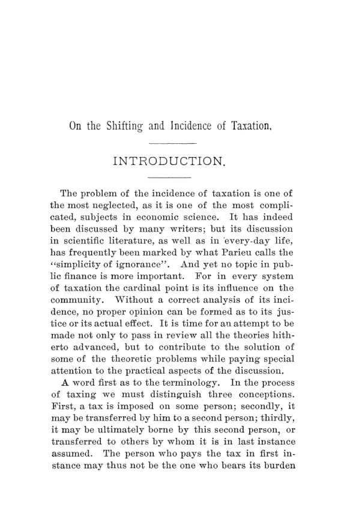

Seligman, 1892: quem realmente paga o imposto?
Leitura: 12 min
Em 1892, Seligman desmontou a ideia de que todo imposto se espalha por igual entre todos. Quem paga depende da demanda, do capital e do mercado — e o legislador nem sempre acerta.


Durante a Guerra Civil, os Estados Unidos tributaram os fósforos. O imposto fez surgir um monopólio, e o preço subiu muito além do tributo. Quando o imposto caiu, o preço desabou numa proporção bem maior do que a alíquota extinta. Edwin R. A. Seligman, professor de economia política e finanças do Columbia College, usa o caso como exemplo gritante de algo que a teoria da época não sabia explicar: um imposto não apenas passa adiante, ele altera o mercado por onde passa.
O exemplo está enterrado no capítulo V de On the Shifting and Incidence of Taxation, monografia publicada em março e maio de 1892 num número duplo das Publications of the American Economic Association. São 185 páginas, do 7 ao 191, mais uma bibliografia que vai de Petty e Locke a Walras e Marshall. A ambição é declarada na introdução: revisar todas as teorias já propostas sobre quem paga os impostos e resolver os problemas teóricos com atenção especial à prática.
Qual é a diferença entre pagar um imposto e suportá-lo?
Seligman começa pelo vocabulário, porque é ali que a confusão nasce. Quem recolhe o imposto em primeira instância pode não ser quem arca com ele no fim. A transferência é o deslocamento (shifting); o peso final é a incidência. Há ainda um terceiro conceito, o efeito, que trata da redistribuição da riqueza. O deslocamento é o processo, a incidência é o resultado e a mudança na distribuição é o efeito. Misturar os três, diz o autor, é o erro mais comum da literatura.
O deslocamento também não se confunde com a evasão. Na evasão, o imposto deixa de ser pago sem que ninguém o assuma. O contrabando é evasão ilegítima. Quando um imposto estimula técnicas melhores de produção, como o imposto sobre o açúcar de beterraba na Europa ou o do uísque nos Estados Unidos, o produtor escapa de parte do tributo de forma legítima, sem repassá-lo a ninguém. A pergunta da incidência é só uma, de fato: quem realmente paga o imposto?
Por que dez teorias diferentes não bastavam?
Mais de um terço do livro é história das ideias. Seligman conta nada menos que 10 teorias da incidência e reclama das duas únicas histórias anteriores, ambas alemãs, por ignorarem os autores italianos, espanhóis e americanos. A classificação é, em si, um diagnóstico. Os fisiocratas achavam que todo imposto recaía sobre os donos de terra. Ricardo construiu a teoria absoluta: análise profunda, mas rígida, que trata o mercado como se não houvesse atrito. Seligman a chama de prematura e inadequada.
O alvo principal é outro: a teoria da difusão, que ele batiza de otimista. Thiers, inventor do termo, tomou-o emprestado da óptica e comparou o imposto aos raios de luz que se espalham. Lord Mansfield já falara de uma pedra que cai no lago e agita a superfície inteira. A conclusão política era confortável. Como o imposto se dissolve nos preços, cada um paga segundo o que consome; e como os ricos consomem mais, Thiers podia dizer aos socialistas que os ricos já pagavam a maior parte.
Canard levou o raciocínio ao limite. Se todo imposto acaba se distribuindo por igual, basta esperar. Daí a máxima que Seligman reproduz com evidente prazer:
“Todo imposto antigo é bom, todo imposto novo é mau” (“Every old tax is good, every new tax is bad”)
A ironia seca vem logo depois: a solução prática de Canard era substituir todos os impostos existentes por um imposto sobre o sal. Do lado oposto, Proudhon aceitava a difusão mas tirava dela a conclusão contrária. Como a massa dos consumidores é pobre, todo imposto seria iníquo, e o problema tributário, insolúvel. Otimistas e pessimistas partiam da mesma premissa, e Seligman recusa a premissa.
Nos Estados Unidos, observa ele, a difusão sobrevivia melhor do que em qualquer outro lugar. O país seria o único onde a doutrina ainda era defendida, e seu principal representante era David A. Wells, para quem os impostos se igualam e se difundem sozinhos se cobrados com uniformidade:
“Toda tributação recai, em última instância e necessariamente, sobre o consumo” (“All taxation ultimately and necessarily falls on consumption”)
Os elogios vão para os matemáticos. Cournot é, de longe, o mais hábil: tratou a incidência como parte da teoria do valor e aplicou cálculo diferencial a mercados em monopólio e em concorrência. No estudo dos impostos indiretos, diz Seligman, nunca foi superado. O defeito é o alcance, porque Cournot só olhou para impostos sobre mercadorias. Fauveau deixou a melhor imagem contra Thiers: a difusão não torna o imposto proporcional, assim como a luz de uma vela não ilumina igualmente todos os cantos da sala.
Quem paga o imposto sobre a terra?
A parte construtiva começa pelo campo, e com uma queixa concreta: os fazendeiros americanos diziam pagar impostos muito acima de sua capacidade. A razão apontada é que, nas cidades, a riqueza mobiliária intangível escapava quase toda ao fisco, enquanto no campo a propriedade era visível. A resposta habitual era que o fazendeiro repassaria o imposto ao preço dos produtos. Seligman desmonta a tese com um argumento que Ricardo deixara de lado, o comércio internacional.
O fazendeiro do Oeste, escreve ele, tem o preço do trigo fixado em Liverpool, pelas condições de produção em países a milhares de milhas de distância. Se seus impostos dobrarem, não receberá um centavo a mais. Ele e só ele carrega o tributo. A conclusão do capítulo é direta: nas condições americanas da época, o dono da terra paga o imposto que recai sobre ela, e é um erro supor um deslocamento geral para o consumidor.
Nas cidades, o raciocínio separa o terreno da construção, regidos por princípios distintos. O imposto sobre o prédio tende a recair quase todo sobre o ocupante. Somado à parte do imposto do terreno que também chega a ele, o resultado é que, numa cidade próspera e em crescimento, o inquilino suporta a maior parte; em bairros decadentes, o proprietário. Na Inglaterra, onde as taxas locais eram cobradas do ocupante, o sistema seria talvez o mais iníquo de todos os sistemas de tributação local direta.
O capital foge do imposto?
Um imposto igual sobre todo o capital cairia sobre o capitalista, sem saída. Mas Seligman avisa que esse caso é hipotético: é a teoria do imposto geral sobre a propriedade americano, nunca sua prática. Na vida real, o imposto sobre capital é sempre desigual. E um imposto desigual sobre capital emprestável tende a passar do credor ao devedor, porque o capital migra entre setores e entre países em busca do retorno habitual.
É aqui que aparece outro conceito central, a capitalização. Quando um imposto desigual atinge um bem que gera renda, o comprador desconta o tributo no preço. Quem compra depois fica livre; quem era dono no momento da criação do imposto perde de uma vez. Por isso, diz Seligman, um imposto deslocado não pode ser capitalizado, e um imposto capitalizado não pode ser deslocado. A fórmula é seca: a causa é a desigualdade; o resultado, confisco ou doação.
Por que o modo de cobrar importa tanto quanto o valor cobrado?
O capítulo sobre lucros é o mais técnico, e o mais atual. Seligman distingue 4 formas de tributar lucros: pela quantidade produzida, pela receita bruta, pela receita líquida e por um valor fixo. O repasse ao consumidor depende de duas coisas, a elasticidade da demanda, ou seja, quanto o consumo cai quando o preço sobe, e o tipo de retorno da indústria, constante, crescente ou decrescente. Para bens que o consumidor compra a qualquer preço, o preço sobe exatamente o valor do imposto, caso que ele próprio admite ser raro.
O monopolista tributado por unidade produzida pode, e em geral vai, repassar o imposto. Mas um imposto de valor fixo sobre o monopólio recai sempre sobre o lucro de monopólio. Já na concorrência, a licença fixa favorece o grande produtor, que paga o mesmo que o pequeno e prefere absorver o tributo para tomar-lhe os clientes. As licenças altas para bares nos Estados Unidos, observa, não encareciam necessariamente a bebida: reduziam o número de estabelecimentos e concentravam o negócio nos mais ricos.
Daí recomendações muito concretas. Empresas deveriam ser tributadas pela receita líquida, não pela bruta, se o objetivo for não transferir o imposto à comunidade. Impostos sobre monopólios puros não deveriam incidir sobre a produção, se a intenção for que fiquem no monopólio. E, contra os extremistas da época, Seligman nota que a perda do consumidor com uma tarifa de importação não se mede pela arrecadação: o preço pode subir menos do que o imposto, ou nem subir.
Afinal, todo imposto recai sobre todos?
A resposta final é não, e o argumento é elegante. A difusão supõe que todo consumidor é também produtor e pode repassar o imposto adiante. Mas boa parte do consumo é improdutivo. Quem gasta a renda comprando diamantes não tem a quem repassar o imposto: pode comprar menos diamantes, mas não transfere nada ao joalheiro. O fim de toda produção é o consumo. Por isso não existe difusão indefinida.
Mesmo que existisse, seria injusta. Se todos os impostos recaíssem sobre todos, a tributação seria proporcional ao gasto, e o gasto é, para Seligman, a menos equitativa das bases, porque pesa mais sobre os menos afortunados. O único teste de justiça é a capacidade de pagar. A velha distinção entre impostos diretos e indiretos perde boa parte do valor: na prática, ela registra apenas a intenção do legislador, que nem sempre coincide com o resultado.
Sobram duas regras. Só o excedente econômico, a renda pura da terra e o lucro puro, não pode ser deslocado, porque não faz parte do custo de produção. E o legislador deve preferir impostos de efeito previsível. Num grupo, os que quase não se deslocam: sobre monopólios, lucro líquido, heranças e certas formas de propriedade e renda. No outro, os que se deslocam por inteiro: tarifas de importação, certos impostos de consumo e licenças, impostos sobre a receita bruta das empresas. Quem quer atingir certas classes diretamente escolhe o primeiro grupo; quem quer que o imposto seja pago sem que se perceba, o segundo.
Seligman fecha com modéstia calculada. A teoria da incidência ajuda, mas não substitui, o estudo da justiça econômica. E retoma uma frase que diz ser corrente:
“nem o arcanjo nem o arquidemônio da ciência das finanças” (“neither the archangel nor the archfiend of the science of finance”)
Na minha leitura
Na minha leitura, o mérito duradouro do livro é ter trocado uma pergunta moral por uma pergunta de fato. A difusão de Thiers e Wells servia para encerrar o debate: se todos pagam, ninguém precisa reformar nada. Seligman reabre o debate mostrando que a resposta depende de coisas observáveis, como a elasticidade da demanda, a mobilidade do capital, a estrutura do mercado e o lugar onde o preço é formado. Isso tira o argumento da retórica e o põe na conta.
O livro também ensina uma humildade útil. Seligman admite que as proporções exatas são impossíveis de determinar e que o atrito econômico desmente as leis absolutas. Mesmo assim, recusa o agnosticismo. É a postura certa para qualquer política tributária: não fingir precisão que não se tem, mas preferir os tributos cujo destino se consegue prever. Um imposto cuja incidência ninguém conhece é, antes de tudo, um imposto que ninguém escolheu de fato.
Glossário
- Incidência
- quem suporta, no fim, o peso de um imposto, que nem sempre é quem o recolhe.
- Deslocamento (shifting)
- transferência do imposto de quem o paga em primeira instância para outra pessoa, via preços, salários ou juros.
- Evasão
- não pagamento do imposto sem transferência a ninguém; pode ser legítima ou ilegítima.
- Teoria da difusão
- ideia de que todo imposto acaba espalhado pelos preços e recai sobre todos conforme o consumo.
- Capitalização do imposto
- desconto do imposto futuro no preço de compra de um bem que gera renda, que concentra o ônus em quem era dono quando o imposto foi criado.
- Elasticidade da demanda
- quanto a quantidade comprada cai quando o preço sobe.
- Excedente econômico
- renda pura da terra e lucro puro, que não entram no custo de produção e por isso não se deslocam.
- Atrito econômico
- forças práticas, como custos de mudança e hábitos, que impedem os ajustes previstos pela teoria abstrata.
Fontes
- On the Shifting and Incidence of Taxation (pp. 7–191). JSTOR · Internet Archive (PDF)
- Sumário da edição no JSTOR: Publications of the American Economic Association, vol. 7, nº 2/3.
Documento em domínio público (EUA, publicado antes de 1931), via JSTOR Early Journal Content e Internet Archive. Resumo e comentário do autor deste site, sem afiliação com a American Economic Association. Encontrou um erro? Escreva: a correção é publicada no próprio texto, com data.
← Nº 32 · A prata que voltava ao Tesouro: Taussig e as leis de 1878 e 1890 Nº 34 · Ross, 1892: o fundo que prometia pagar a dívida sozinho →